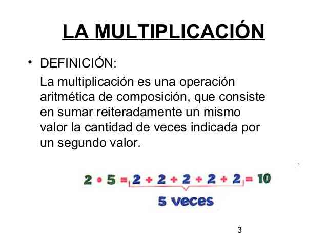

Multiplicación es un término con origen en el latín multiplicatio que permite nombrar el hecho y las consecuencias de multiplicarse o de multiplicar (incrementar el número de cosas que pertenecen a un mismo grupo).
Para la matemática, la multiplicación consiste en una operación de composición que requiere sumar reiteradamente un número de acuerdo a la cantidad de veces indicada por otro.
Los números que intervienen en la multiplicación reciben el nombre de factores, mientras que el resultado se denomina producto. El objetivo de la operación, por lo tanto, es hallar el producto de dos factores.
